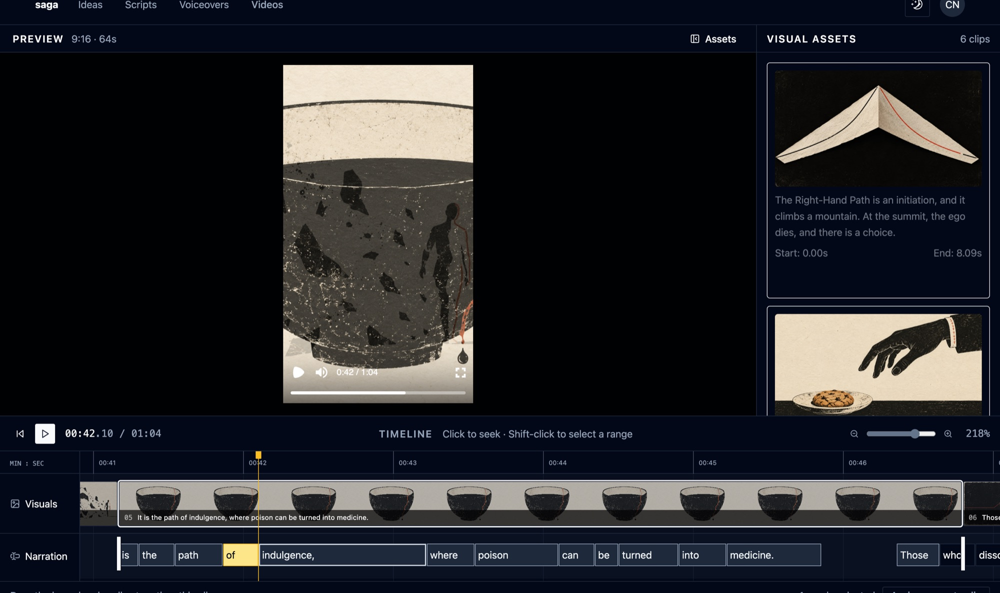
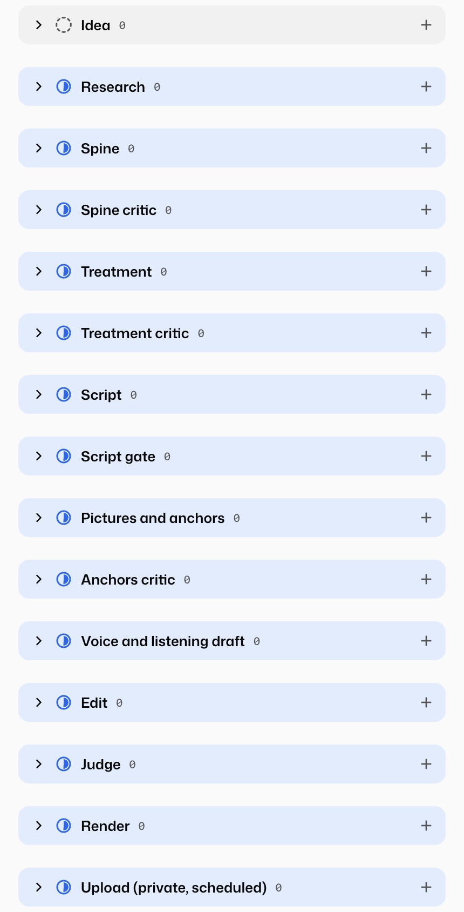
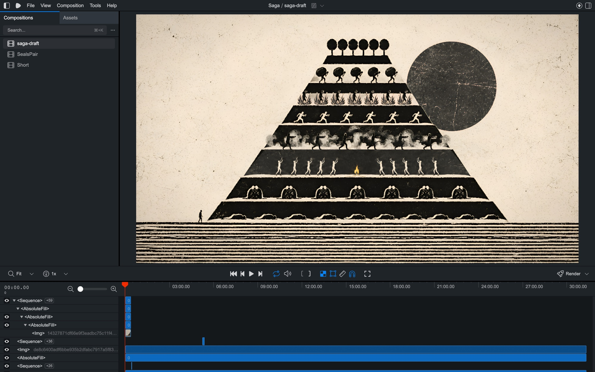

Saga is a pipeline of AI agents and code that writes, narrates, illustrates and edits videos. I first ran it in December 2023 on The Last Alchemist, a YouTube channel of Shorts about ancient mysteries. A friend and I had a bet on whether a channel made entirely with AI could grow fast without ads. I won the bet when the channel reached 1,000 subscribers in 34 days. Today Saga makes Cybertantra, which has had 35,200 views and 281 subscribers since it launched in late September 2026.
Own project · 2023 to now · OpenAI, ElevenLabs, Remotion, YouTube Data API
How a Short got made
Each Short started as a row in a table where I wrote the topic. When I started a batch, three agents on OpenAI's Assistants API did the writing and the visual decisions. The Scriptwriter wrote up to 150 words, with a hook at the start and an ending that leads back into it, so the Short plays as a loop. OpenAI's text-to-speech read the script, and when the narration ran past a minute, the script went back to the Scriptwriter to be cut. Whisper transcribed the narration with timings, the Architect chose the moments that needed a new image and gave each one its colour and camera move, and the Photographer wrote the prompts for those images. LemonFox generated the images, with DALL·E 3 as the fallback.
Putting each video together was plain code. Creatomate rendered the first ones, and from 30 December Remotion did, with a slow zoom or pan on every image, captions that appear word by word, and music chosen by the mood the Scriptwriter gave the script. From 21 December Saga uploaded the videos through the YouTube API, and from January it worked on three Shorts in parallel.
My part was writing the topics, running each stage from a terminal menu and making each video public, since the API uploaded them as private. The writing, the voice, the images and the edit ran without me.
The three most watched Shorts from The Last Alchemist.
The run
Between 14 December 2023 and 16 January 2024 Saga published 205 Shorts, about six a day and 16 on the busiest, each costing under $1 to make. The channel reached 1,000 subscribers on 16 January. That settled the bet in my favour, and I stopped uploading there, because what I wanted next was longer stories.
02505007501,000Last upload
Shorts published
14 Dec25 Dec16 Jan1 Feb
Subscribers, day by day, with the Shorts published each day underneath.
The first week brought 41 subscribers. Views first jumped on 20 December, to 5,005, and from Christmas Day the channel took off, gaining 788 subscribers between 25 December and 7 January. The best day was 6 January, with 11,450 views and 84 new subscribers.
05,00010,000Last upload
14 Dec25 Dec16 Jan1 Feb
Views per day, from the first upload to 1 February.
The 34 days of uploads brought 135,845 views and 1,102 hours of watch time, 94% of the channel's lifetime views. On average, viewers watched 29 seconds of Shorts that ran about 49. I paid for no promotion, and over the channel's life 88% of its views have come from the Shorts feed and most of the rest from YouTube search.
The models of early 2024 couldn't hold a longer story together, in the writing or in the images. That year I rebuilt Saga as a web studio, where you plan a video with an agent and lay it out in a Remotion editor, and then tried a team of CrewAI agents writing four-minute scripts.

Saga's studio editor, with the narration laid along the timeline word by word under the images it plays over.
Cybertantra
Saga's latest version is how I make Cybertantra, my channel about spirituality, with episodes up to fifty minutes long, narrated with Eleven v4, scored with Eleven Music and illustrated with OpenAI's image model.
It now runs as a line of stages, each one an AI agent with its own job. A researcher gathers the sources. A writer builds the episode in three passes, a spine, a treatment and the script, and a critic reads each pass and sends it back when it isn't good enough. An editor chooses the pictures and what each camera move should land on, a producer voices the narration, the editor cuts it in Remotion, and a judge watches the cut. Nothing renders until I sign off. Saga then uploads it as a private, scheduled video with its title, chapters, captions and thumbnail.

Saga's episode board, every stage an episode passes through, in Mastra Factory.Saga’s episode board: separate role sessions, file-backed verdicts and bounded critic loops in Mastra Factory.
Holding one voice steady for fifty minutes is the hard part, so Saga narrates in short takes, each with a warm-up line that is cut afterwards, and splices them back together sentence by sentence. The camera moves across each image toward whatever the current sentence is about.

Saga's edit of an episode, The Fire in Your Belly, open in Remotion Studio.
Cybertantra went live on 29 September 2026, and its first episode came out on 3 October. By 2 November the channel had 35,200 views, 641 hours of watch time and 281 subscribers, from episodes of 18 to 50 minutes and the Shorts that send viewers to them.
0100200300
Videos published
29 Sep10 Oct20 Oct31 Oct
Subscribers, day by day, with the videos published each day underneath.
02,0004,000
29 Sep10 Oct20 Oct31 Oct
Views per day, to 31 October.
From YouTube Studio, 29 September to 2 November 2026